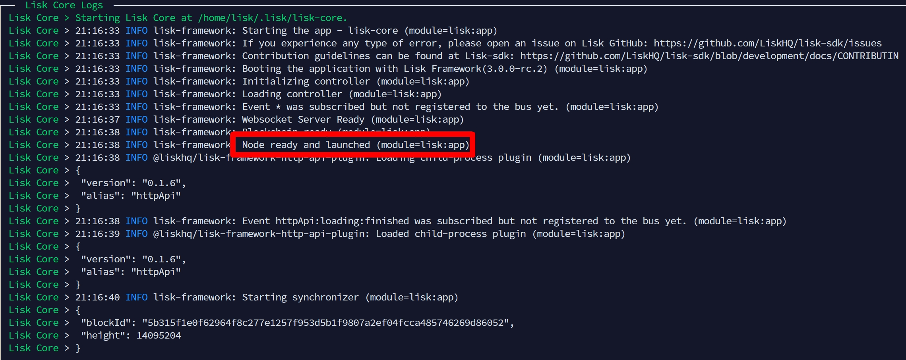

______ _ _ _ _ _ ________ _____ _____ _ __
| ___ \| | | || \ | || | / /| ___ \| _ |/ __ \| | / /
| |_/ /| | | || \| || |/ / | |_/ /| | | || / \/| |/ /
| __/ | | | || . ` || \ | / | | | || | | \
| | | |_| || |\ || |\ \| |\ \ \ \_/ /| \__/\| |\ \
\_| \___/ \_| \_/\_| \_/\_| \_| \___/ \____/\_| \_/
---------------------------------------------------------------------------
Home | Lisk
---------------------------------------------------------------------------
~# adduser lisk
~# gpasswd -a lisk sudo
~# su - lisk
~$ sudo apt-get -y update && sudo apt-get -y upgrade && sudo apt-get -y dist-upgrade && sudo apt-get -y install chrony wget tar zip unzip ufw htop nano npm git curl bash jq screen
~$ sudo apt install -y build-essential
~$ wget -qO- https://raw.githubusercontent.com/nvm-sh/nvm/v0.37.2/install.sh | bash
Now disconnect from your server (close your sesssion) and start a new session.~$ nvm install 12
~$ npm install --global --production lisk-core
~$ npm i -g pm2
~$ sudo ufw default deny incoming
~$ sudo ufw default allow outgoing
~$ sudo ufw allow ssh
~$ sudo ufw allow 8001/tcp
~$ sudo ufw enable
~$ sudo ufw status verbose
~$ cd && nano core-start.json
{
"name": "lisk-core",
"script": "/home/lisk/.nvm/versions/node/v12.22.5/bin/lisk-core start --api-ws -c ~/.lisk/lisk-core/config.json",
"env": {
"LISK_NETWORK": "mainnet"
}
}
Now you create the path where Lisk will run and you create an empty config file:
~$ cd && mkdir ~/.lisk && mkdir ~/.lisk/lisk-core && touch ~/.lisk/lisk-core/config.json
~$ cd && pm2 start core-start.json
If your machine doesn't find the command lisk-core, then open ~./profile...
~$ nano ~/.profile
export PATH="$PATH:$HOME/.lisk/lisk-core/bin"
~$ pm2 stop lisk-core
Create the configuration txt-file:~$ nano /home/$USER/.lisk/lisk-core/config.json
{
"network": {
"whitelistedPeers": [{
"ip": "IP.OF.FORGING.NODE",
"port": 8001
}]
}
}
~$ cd && nano core-start.json
~$ pm2 monit

Now wait until it is in sync with the Lisk network. In the meantime you should create another trusted node (just repeat all steps again until here).
You should have at least two trusted nodes but maximum four as this is the limit per forging node.
But: Your trusted nodes can also have four additional trusted nodes. ;)
~# adduser lisk
~# gpasswd -a lisk sudo
~# su - lisk
~$ sudo apt-get -y update && sudo apt-get -y upgrade && sudo apt-get -y dist-upgrade && sudo apt-get -y install wget tar zip unzip ufw htop nano npm git curl bash jq screen
~$ sudo apt install -y build-essential
~$ wget -qO- https://raw.githubusercontent.com/nvm-sh/nvm/v0.37.2/install.sh | bash
Now disconnect from your server (close your sesssion) and start a new session.~$ nvm install 12.22.5
~$ npm install --global --production lisk-core
~$ curl -sL https://deb.nodesource.com/setup_12.x | sudo -E bash -
~$ sudo apt-get install -y nodejs
~$ sudo apt-get install -y ifupdown
~$ sudo ufw default deny incoming
~$ sudo ufw default allow outgoing
~$ sudo ufw allow ssh
~$ sudo ufw enable
~$ sudo ufw status verbose
~$ ifconfig~$ nano first-start-and-stop.sh#!/bin/bash sudo ifconfig eth0 down wait /home/lisk/.nvm/versions/node/v12.22.5/bin/pm2 start /home/lisk/core-start.json sleep 20 /home/lisk/.nvm/versions/node/v12.22.5/bin/pm2 stop all wait sudo ifconfig eth0 up
~$ chmod +x first-start-and-stop.sh
~$ ./first-start-and-stop.sh
~$ cd /home/$USER/.lisk/lisk-core
~$ lisk-core account:create
[ { "passphrase": "monkey ... ... ... ... ... ... ... ... ... ... image", "privateKey": "fc7d6bdf...4e51155a", "publicKey": "c50da2f4e489d33d22ffd26192eddff5ed9e6aa08c4d5a4794c62b034e51155a", "binaryAddress": "cf05384d5707179ea691731726313e83a00dc6f4", "address": "lskajvtut6wzj5ah4ky7o5roo4fu7uzsywkawa94w" } ]
Store the output and don't lose it.
Now send LSK to your address.
~$ lisk-core account:create
You just need the 12 words. Don't lose them!
pitch ... ... ... ... ... ... ... ... ... ... unusual
~$ lisk-core passphrase:encrypt
Please enter passphrase: monkey ... ... ... ... ... ... ... ... ... ... image
Please re-enter passphrase: monkey ... ... ... ... ... ... ... ... ... ... image
Please enter password: pitch ... ... ... ... ... ... ... ... ... ... unusual
Please re-enter password: pitch ... ... ... ... ... ... ... ... ... ... unusual
Copy and paste the output into a txt-file. You'll need parts of it for your config.json:
{"encryptedPassphrase":"iterations=100.......version=1"}
Now you create the onion hashes file:
~$ cd ~ && lisk-core hash-onion -o hash_onion.json
Now you create a bash file:
~$ cd ~ && nano create_config.sh
Paste the following into the file and do NOT close it. You will replace the highlighted parts:
cd ~ && > ~/.lisk/lisk-core/config.json
ONION=$(cat ~/hash_onion.json)
cat > ~/.lisk/lisk-core/config.json << EOF_mainnet_config
{
"network": {
"maxOutboundConnections": 2,
"maxInboundConnections": 0,
"advertiseAddress": false,
"seedPeers": [],
"fixedPeers": [{
"ip": "trusted.NODE.1.IP",
"port": 8001
},
{
"ip": "trusted.NODE.2.IP",
"port": 8001
}
]
},
"logger": {
"fileLogLevel": "info"
},
"plugins": {
"httpApi": {
"whiteList": [
"127.0.0.1"
]
}
},
"forging": {
"delegates": [
{
"address": "binaryAddress",
"encryptedPassphrase": "iterations=100............version=1",
"hashOnion": $ONION
}
]
}
}
EOF_mainnet_config
Now remove the highlighted parts for trusted.NODE.1.IP, trusted.NODE.2.IP, binaryAddress and encryptedPassphrase and replace them with the parts from the outputs you have generated above.
Save and exit the create_config.sh file.
Now you need to set the permissions to the file and execute it. This step will copy and paste the onion hashes into your config.json:
~$ chmod +x create_config.sh
~$ ./create_config.sh
Now you check if the config.json is working correct.
~$ cd && nano core-start.json
{
"name": "lisk-core",
"script": "lisk-core start -c /home/lisk/.lisk/lisk-core/config.json",
"env": {
"LISK_NETWORK": "mainnet"
}
}
~$ pm2 start core-start.json -c ~/.lisk/lisk-core/config.json
~$ pm2 monit
If the output is like the one above, your config.json seems correct.
If not, you have made mistakes when replacing the parts. Check again.
To detach from pm2 press ctrl+c
~$ cd && pm2 start core-start.json
~$ cd ~
~$ curl https://raw.githubusercontent.com/Gr33nDrag0n69/LiskCore3Tools/main/SH/lisk-forging-enable.sh -o ~/lisk-forging-enable.sh
~$ chmod 700 ~/lisk-forging-enable.sh
~$ ./lisk-forging-enable.sh
? Enter password to decrypt the encrypted passphrase: *******************************************
Forging status:
{"address":"BinaryAddress","forging":true}
If the output says "forging":true, congratulations. You should forge on Mainnet securely behind your trusted nodes.
Important: To verify that only the IP's of your trusted nodes are on the network, check here, here and here and search for the IP's. Your forging node IP should not appear anywhere!
To confirm that you are forging, use the Moosty's Mainnet Explorer or you can always use lisk-core account:get BinaryAddress to see if your balanace is increasing.
You also can check logs for forged blocks with cat ~/.lisk/lisk-core/logs/lisk.log | grep "Forged new block" or wait for forged blocks with tail -f ~/.lisk/lisk-core/logs/lisk.log | grep "Forged new block".
Stop your node:
~$ pm2 stop lisk-core
~$ npm update -g lisk-core
If you get warnings about npm and/or nvm, try this:
~$ nvm install 12.22.5
~$ npm install -g npm
Now restart your node:
~$ cd && pm2 start core-start.json
If your machine doesn't find the command lisk-core, then add the following entry to your ~./profile:
~$ nano ~/.profile
Put the following line to the end of the file, save and start a new session:
export PATH="$PATH:$HOME/.lisk/lisk-core/bin"
Now enable forging
~$ cd ~
~$ curl https://raw.githubusercontent.com/Gr33nDrag0n69/LiskCore3Tools/main/SH/lisk-forging-enable.sh -o ~/lisk-forging-enable.sh
~$ chmod 700 ~/lisk-forging-enable.sh
~$ ./lisk-forging-enable.sh
? Enter password to decrypt the encrypted passphrase: *******************************************
Forging status:
{"address":"BinaryAddress","forging":true}